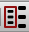
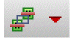
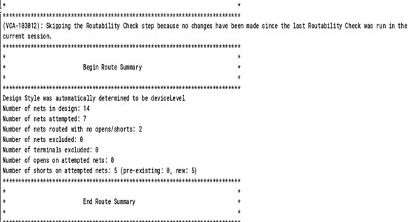
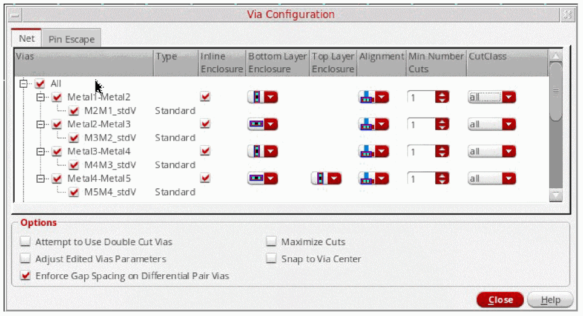

C
Wire Assistant
The Wire Assistant is a dockable assistant that provides a quick, easy, and single point of access to the commonly used options for all routing purposes: automatic routing, interactive routing, assisted routing, and post-route optimization. The Wire Assistant is available in Layout Suite XL and higher tiers.
The Wire Assistant also provides single-point access to some of the constraint values to be used by the interactive routing for creating and editing wires. Using the constraint look-up feature, the Wire Assistant provides the values to be used and a way to create transient constraints to override some of the values in the fields. You can override values for constraints such as minimum width, minimum spacing, minimum number of cuts, valid layers, and valid vias. You can override the constraint values in the Wire Assistant if the values you specify are:
- Greater than the constraint value in the looked-up constraint group for the applicable minimum rules.
- Within the layer/via range in the looked-up constraint group for Routing, Pin Escape layers, and Valid Vias. See the Override Constraints section of the Wire Assistant.
For more information about constraint group look-up precedence, see Constraint Group Lookup Precedence.
In addition, while routing a net from the Navigator assistant, you can choose to use the Wire Assistant to override values. To do this:
-
In the Navigator assistant, right-click a net.
The Net context-sensitive menu displays. -
Choose the Route With WA Override command.This command supports Specialty Routing.
Unlike the Process Rule Editor, the constraints set up by using the Wire Assistant are not persistent, with an exception. The spacing constraint set up by using the Wire Assistant is persistent on the resulting wiring, not net. In addition, the constraints set up by using the Wire Assistant do not impact the Route – Automatic Routing and the Batch Checker. In the Wire Assistant, overrides created by Automatic Routing are supported. These overrides are created when Automatic routing is done through the Automatic section of Wire Assistant, or from the Navigator context-sensitive menu.
This appendix covers the following topics:
- Displaying and Hiding the Wire Assistant
- Wire Assistant Graphical User Interface
- Wire Assistant Forms
Displaying and Hiding the Wire Assistant
To display the Wire assistant, do one of the following:
- Choose Window – Assistants – Wire Assistant.
- Right-click anywhere in the layout window menu bar and choose Assistants – Wire Assistant.
Once selected, Wire Assistant is added as a docked assistant pane within the current layout window. By default, Wire Assistant is positioned at the lower-right area of the session window.
To hide the Wire assistant, do one of the following:
- Click the Hide button (X) in the Wire Assistant title bar.
- Right-click anywhere in the layout window menu bar and choose Assistants – Wire Assistant.
Wire Assistant Graphical User Interface
The Wire Assistant comprises of two components, the toolbar and the different sections for configuring routing settings and configuring settings while creating and editing a wire or a bus. You can add or remove these sections from the Wire Assistant. You can also configure the fields and options to appear in each section, as required. This section covers the following:
- Wire Assistant Title Bar Buttons
- Wire Assistant Toolbar
- Wire Assistant Sections
- Wire Assistant Forms
Wire Assistant Title Bar Buttons
The Wire Assistant title bar has the following buttons:
-
Help
Displays information about how to use the Wire Assistant. -
Float/Dock
Docs or undocks the Wire Assistant. -
Hide
Hides the Wire Assistant.
Wire Assistant Toolbar
The Wire Assistant toolbar contains the following buttons:
- Virtuoso Space-based Router and Pin to Trunk Toolbars - On/Off  icon is similar to the Wire Assistant Form icon on the Virtuoso Space-based Router toolbar. This icon controls the display of the Virtuoso Space-based Router and the Pin To Trunk toolbars. When the icon is clicked, the toolbars are displayed in the layout window. Otherwise, the toolbars are hidden. By default, the Virtuoso Space-based Router and Pin To Trunk Toolbars icon is turned off.
- Configure Wire Assistant Form Visibility : Lets you view the Wire Assistant Visibility Form.
-
Seed Attributes From a Constraint Group 
: Lets you select a constraint group to use for seeding the values in the Override Constraints section – the width and spacing table, the valid routing layers and vias, the valid taper layers, vias, taper halo, and minimum number of cuts. The constraint groups defined in your technology file appear in the drop-down list.
- Reset Override Constraints And VSR Options
- VSR Save Preset
- VSR Delete Preset
- VSR Load Preset
For more information on the VSR Preset toolbar icons, see Working with VSR Presets.
Wire Assistant Sections
The Wire Assistant provides access to various options under the sections mentioned here. The Wire Assistant options that are available in other GUIs or context-sensitive menus, have been indicated. For others, it can be assumed that they are available exclusively in the Wire Assistant.
By default, the Wire Assistant displays the Select, Override Constraints, and Automatic sections. The Automatic and Interactive sections are mutually exclusive to each other and only one of them is expanded at any particular time. The Automatic section is expanded by default when the Wire Assistant is first launched, or after escaping from one of the interactive commands. The Interactive section is enabled in the Wire Assistant when you start the Create Bus, Create Wire, Point to Point, and Guided Routing commands.
Select Section
The following option is available in the Select section of the Wire Assistant.
Lets you specify one or more net names for the current wire. The created wire is added to the specified net. A new net is created if the one specified does not already exist. A bus name can also be provided in the Net field. For example, net1<0:15>.
The net names in the Navigator assistant and the Wire Assistant are synchronized automatically. This means that if there are selected net in the Navigator assistant, they are automatically imported to the Nets field of the Wire Assistant.
Override Constraints
The Override Constraints section is displayed in the Wire Assistant by default. This section consists of the following three tabs:
When the Override Constraints check box is selected, the automatic and interactive routing commands, such as Finish and P2P routing, considers the overriding values of width, spacing, and via overrides into the Wire Assistant and accordingly routes the design. However, when the Override Constraints check box is deselected, the automatic and interactive routing commands do not consider the overriding values of width, spacing, and via overrides into the Wire Assistant and the routing is performed based on the default values.
Net
The constraint group used to seed the width and spacing table is mentioned above it. The Default constraint group is derived from the Wire setting in the Layout Editor Options form. For more information about the form, see Wire Editing in the Virtuoso Layout Suite documentation.
You can change the constraint group from which to seed the table by selecting a value from the Seed Attributes From a Constraint Group list on the Wire Assistant toolbar. If you select a different value from the Seed Attributes From a Constraint Group list, the Default label changes to Seeded and the constraint group name is changed to the one selected. For example, Seeded: LefDefaultRouteSpec. When you override a value in the Override Constraints section, the constraint group name is updated to default (Default: VirtuosoDefaultSetup), which is the same as the one selected in the Default Wire Constraint Group field in the Layout Editor Options form.
By using
Some of the features of the Net tab include:
- The constraint group selected from the Seed Attributes From a Constraint Group list does not change the application default constraint group setting in the Wire section of the Layout Editor Options form.
- Specifying routing layers only in the Net tab does not guarantee that the router uses only those layers. This is because the Pin Escape tab in the Overrides Constraint section also has option of selecting the valid layer. The router can connect to the pin using the layers in the Pin Escape tab. However, if you want to limit all routing to a particular set of layers, layers should be specified both in the Net tab as well as the Pin Escape tab.
- While overriding the constraint values in the Width and Spacing table, ensure that the values specified for the Width, Spacing, and Min Num Cuts are greater than or equal to the values for the corresponding minimum rules in the looked-up constraint group. In addition, the valid routing layers and valid vias should be a subset of the looked-up constraint group for Routing and Pin Escape layers and Valid Vias. Ensure that the override values do not create artwork that will immediately violate an existing looked-up constraint value.
- Modification of the values in the Override Constraints section does not change the content of the constraint group in the OpenAccess database.
-
If you override any value in the Override Constraints section, the change is indicated by colored fields in the table and by color bars next to the other updated fields. The figures below illustrate some examples where the constraint values are overridden in the table and for other fields.
You can place the pointer on the colored fields in the table, or on a color bar to view the override information in a tooltip, as shown in the figures below.
Width and Spacing Table allows you to override the preferred routing direction, the width, and the spacing for the layers to be used while creating wires. You can override the current preferred routing direction for each layer by selecting a different value from the Dir list. The routing directions supported by the Wire Assistant include Horizontal , Vertical , and None
, and None  . Any update to the routing direction for a layer in the Layers assistant is automatically updated in the Dir column for that layer in the Wire Assistant. However, when you update the routing direction for a layer in the Wire Assistant, the Layers assistant is not updated. This is because the Wire Assistant does not update the constraints or attributes in the technology file. The updated attribute is saved temporarily.
. Any update to the routing direction for a layer in the Layers assistant is automatically updated in the Dir column for that layer in the Wire Assistant. However, when you update the routing direction for a layer in the Wire Assistant, the Layers assistant is not updated. This is because the Wire Assistant does not update the constraints or attributes in the technology file. The updated attribute is saved temporarily.
You can click in the Width and Spacing fields to edit them. If a net has been specified in the Net Name field, then the net width and spacing overrides, if any, are visible in the table. If you change any width value, then the Use Width option in the Create Wire section automatically sets to Last Specified, if it is not done already.
The number of digits after the decimal point allowed in both Width and Spacing table and the Bus Bit table is depended upon the Manufacturing Grid resolution in the technology file. This means that if the manufacturing grid is0.0005, then both the tables allow you to specify four digits only after the decimal point. Similarly, when the manufacturing grid is0.00025, then only five digits can be specified after the decimal point.
If you select a non-drawing, voltage-aware layer purpose to create a wire, the layer purpose is represented in the Layers column in the <layer:purpose_abbreviation> format, as inmetal1:dr4.The wire editor allows the creation of bus wires even if the terminals or instance terminals distance is less than the override spacing, regardless of the current DRD checking mode. After creating the bus, you should run the Batch Checker on the result. The Batch Checker will flag error on the pins or instPins that do not have enough spacing for the override spacing value. For more information about the Batch Checker, see Batch Checking. -
Top Layer
-
Routable
Enables you to select the top valid routing layer limits and overrides thevalidLayerssetting in the selected constraint group. The specified layer range usually intersects the Pin Escape layer range.The override layer range restricts error fixing and optimization to be performed only on a subset of layers.When the top layer is selected from the Routable drop-down list, the layer name in the Layers column of the width and spacing table displays different font color for routable and non routable layers.Font Color/Style Layer Type
The following figure shows only the specified Routable layer range. -
Preferred
Enables you to select the top preferred layer for further limiting the routing layers. The router can route the maximum possible wires on the selected preferred layers. When the router is unable to route on the preferred layers, the layers outside the Preferred layer range but within the Routable layer range are used for routing.If there are top and bottom Routable layers, then, by default, the top and bottom Preferred layer range is the same as the Routable layer range.When the top layer is selected from the Preferred drop-down list, the preferred layers appear bold faced in the Layers column of the width and spacing tables, as shown in the following figure.
-
Routable
-
Bottom Layer
-
Routable
Enables you to select the bottom valid routing layer limits and overrides thevalidLayerssetting in the selected constraint group. For more information, see Top Layer. -
Preferred
Enables you to select the bottom preferred layer for further limiting the routing layers. For more information, see Top Layer.
-
Routable
-
Via
Consists of three common via controls. Using these via controls, you can specify the common settings for all vias in a layout design.-
Enclosure and Cut Direction
This is the first drop-down list next to the Via field. You can specify the enclosure and cut direction settings only to vias that are not fully enclosed. From the Enclosure and cut Direction drop- down list, you can select one of the following options.-
Preferred Enclosure Direction
When selected, the metal layers are crossed. The via enclosures created on metal layers follow the preferred routing direction and no cut direction is implied.
If you want to set both routing direction and via configuration to Preferred Enclosure Direction, it is recommended to set the routing direction from the Dir list of the Width and Spacing table before specifying the via configuration to Preferred Enclosure Direction. This is because the Preferred Enclosure Direction via configuration is based on the current routing direction of each layer.
However, if you have set the via configuration to Preferred Enclosure Direction and then change the routing direction of any layer in the width and spacing table, then the warning message is displayed, as shown in the following figure.The Preferred Enclosure Direction via configuration is in the invalid state due to the change in the routing direction. To reflect the invalid state, the via configuration and the ellipses button next to the Via field changes to the Customized mode, as shown in the following figure.Therefore, check the Via Configuration form to see if the layer enclosures have been appropriately specified before you start routing. -
Horizontal or Vertical Enclosure and Cut Direction
When selected, the metal layers are inline. The via enclosures created on metal layers and the cut direction are either horizontal or vertical. -
Horizontal Enclosure and Cut Direction
When selected, the metal layers are inline. The via enclosures created on metal layers and the cut direction are horizontal. -
Vertical Enclosure and Cut Direction
When selected, the metal layers are inline. The via enclosures created on metal layers and the cut direction are vertical. -
Automatic Enclosure and Cut Direction
When selected, the metal layers are either crossed or inline. Depending on how the via is created on the metal layers, the via enclosures and the cut direction are either horizontal or vertical. For example, When Metal3-Metal4 inline is ON, M3 enclosure direction being horizontal and M4 enclosure direction being vertical, there is a conflict. When router finds a conflict in enclosure direction on Metal layers, router chooses any via with cut direction horizontal-horizontal, vertical-vertical, or cross.
The following figure shows an example of how a via is placed when the Horizontal Enclosure and Cut Direction and Vertical Enclosure and Cut Direction options are selected. -
Preferred Enclosure Direction
-
Edge Alignment
This is a common via control used to specify the via alignment to the wire.-
Center to the Wire
When selected, the origin of the via created on a wire is on the center of the wire. The following figure shows an example where a via created on a wire is aligned to the center to the wire. -
Offset to the Wire
When selected, the via created on a wire is aligned to the edges of the wire. -
Offset or Center to the Wire
When selected, the via created on a wire is either aligned to the edge of the wire or center of the wire. In this mode, the offset vias are preferred by the router but the center is used. -
Offset to the Wire
When selected, the via created on a wire is aligned to the edges of the wire. -
Offset or Center to the Wire
When selected, the via created on a wire is either aligned to the edge of the wire or center of the wire. In this mode, the offset vias are preferred by the router but the center is used.
-
Center to the Wire
-
Ellipses button
When clicked, displays the Via Configuration Form. Using the Via Configuration Form, you can configure the settings for each individual via that exists in the layout design. -
Number of Via Cuts
The minimum number of cuts may be overridden by specifying either a Min Num Cuts value or the number of cuts in Row and Col fields, respectively. By default, the Min Num Cuts field is displayed. To toggle between the minimum number of cuts field and number of cuts by rows and columns field, click the or button respectively.-
Min Num Cuts
By specifying the via cuts as minimum number of cuts, you can override theminNumCutrule value for creating and editing wires. If the override value is less than either the technology rule or the current constraint group on the net or on the design, then the value specified in the Wire Assistant is reset to the minimum value. The figure below displays the override information in a tooltip for the minimum number of cuts. You can place the pointer on the colored field or on a color bar to view the tooltip information.If you want to insert double cut vias where ever possible, which is considered as a ‘soft’ constraint, select the Attempt to Use Double Cut Vias option from the Via Options form. This option allows pin escape and routing with double cut vias. However, if you want to insert double cut vias everywhere, which is considered as a ‘hard’ constraint, then use either aminNumCutconstraint that could be added from the constraint manager or theMin Num Cutsoverride setting from the Wire Assistant. -
Rows and Columns
By specifying the via cuts as the number of rows or the number of columns of via cuts you can override theminNumCutrule with a more explicit configuration for creating and editing wires. The increase and decrease in the number of via row and column is dependent on the minimum number of via cuts.
number of via rows * number of via columns >= minimum number of via cuts.
This condition should always be satisfied. In case the condition is not satisfied,minNumCutviolation is created by the interactive routing commands, such as Create Wire. To avoid theminNumCutviolation, the Wire Assistant makes adjustment to the number of via rows and columns whenever it is required to satisfy the condition. For example, if minimum number of via cut is set to 9, then the row and column automatically adjusts to1and9. The Wire Assistant makes adjustment on number of via rows and columns to satisfy the condition. Else, no adjustments are made.
When theminNumCutvalue is increased, the column and row value is automatically adjusted to meet the constraint. However, ifminNumCutvalue is reduced, the existing larger values for column and row still satisfy the rule and therefore no automatic adjustment is made to decrease the values. However, the number of rows and columns can be manually reduced to satisfy theminNumCutconstraint. When either Columns or Rows is updated to a very small number that does not satisfy the existingminNumCutssetting, the opposite (for example, Rows or Columns, respectively), is changed to a higher number in order to satisfy theminNumCutsrule. -
Rows and Columns
By specifying the via cuts as the number of rows or the number of columns of via cuts you can override theminNumCutrule with a more explicit configuration for creating and editing wires. The increase and decrease in the number of via row and column is dependent on the minimum number of via cuts.
number of via rows * number of via columns >= minimum number of via cuts.
This condition should always be satisfied. In case the condition is not satisfied,minNumCutviolation is created by the interactive routing commands, such as Create Wire. To avoid theminNumCutviolation, the Wire Assistant makes adjustment to the number of via rows and columns whenever it is required to satisfy the condition. For example, if minimum number of via cut is set to 9, then the row and column automatically adjusts to1and9. The Wire Assistant makes adjustment on number of via rows and columns to satisfy the condition. Else, no adjustments are made.
When theminNumCutvalue is increased, the column and row value is automatically adjusted to meet the constraint. However, ifminNumCutvalue is reduced, the existing larger values for column and row still satisfy the rule and therefore no automatic adjustment is made to decrease the values. However, the number of rows and columns can be manually reduced to satisfy theminNumCutconstraint. When either Columns or Rows is updated to a very small number that does not satisfy the existingminNumCutssetting, the opposite (for example, Rows or Columns, respectively), is changed to a higher number in order to satisfy theminNumCutsrule.
-
Min Num Cuts
-
Enclosure and Cut Direction
-
Net Width To
When the Net Width to checkbox is selected, the Net Width to drop-down is enabled. You can specify the pin width per net to route the non-taper section of the net. The net width is determined by the value of this field. You can set the net width to one of the following values.
-
Snap Wires To
Controls the snapping of wires to a grid.
-
Off Grid
Specify this option when the pins are off the grid. -
Manufacturing Grid
If selected, the wires are snapped to the Manufacturing Grid when the routing grid and track pattern are not defined. This is also the default option. -
Routing Grid
If selected, the segments other than the ones directly connecting to the off-grid pins are snapped to the routing grid. -
Track Pattern
Controls the cursor snapping to track the grid and forces routing on the grid where pins are on grid. The track patterns are saved on the design and so each design can have its own set of non-uniform track patterns. -
Snap Pattern
If selected, enables the snapping of wires to the nearest snap pattern track.
The Snap Pattern does not restrict the routing layer. It only uses track patterns and WSPs that exists in the design. For example, it is possible that in some designs only lower layers have WSPs while upper layers do not. In such cases, routing is performed on all routing layers. The top and bottom layer range is used, which maps to a valid routing layers constraint, to control the routing layers. In case, you do not want to route a particular layer then either remove it from your valid routing layers constraint or adjust the bottom or the top routing layer.
When either Snap Pattern or Track Pattern is selected from the Snap Wires To drop-down list, the Auto Route flow considers the patterns and track patterns in the design. The WSPs and track patterns can co-exist in a design, However, if there is a conflict between a WSP and a track pattern, WSP takes precedence and track pattern is ignored. Also, warning messages appear in some specific cases.- A warning is issued if WSP and track pattern co-exist on the same layer. In this case, routing proceeds further until it is completed.
-
A warning is issued if WSP and track pattern is missing in all layers. In this case, routing stops.The wire editor follows the union of both the Top and Bottom layers in the Net and Pin Escape tabs in the Override Constraints section of the Wire Assistant. For example, if the Top and Bottom layers in the Net tab are set to
Metal4andMetal1, respectively, and the Top and Bottom layers in the Pin Escape tab are set toMetal5andMetal2, respectively, the routing interval assumed by the wire editor is betweenMetal5andMetal1.
-
Off Grid
Pin Escape
The Pin Escape tab appears in the Override Constraints section of the Wire Assistant. This tab enables you to select the Top and Bottom layer limits and overrides the validLayers setting in the virtuosoDefaultTaper constraint group. If a virtuosoDefaultTaper constraint group does not already exist, it is created based on the specified Layers, Vias, and Halo values, in the wire default constraint group.
The following options are available in the Pin Escape tab of the Override Constraints section.
-
Mode
There are three modes:-
Allow Taper in Halo
Enables tapering only when needed within a halo area that either defaults to 10 tracks or is the value specified in the Halo Value field. This option is selected by default. -
Use Net Rules Only
Enables pin tapering to avoidminEdgeviolations.
The router tries to satisfy all the net constraints, In order to maintain the net constraints, the router ensures that no violations are created and specifically theminStepEdgeLengthconstraint is not violated. Therefore, when Pin Escape mode is set to Use Net Rules Only, it tapers wire to pin Width till first via in order to avoidminStepEdgeLengthconstraints violations. -
Use Pin Width to First Via
Sets thetaperToFirstViaconstraint to true for the created taper specification. This results in tapering the width from the pin to the first layer change for the specified net.
-
Allow Taper in Halo
-
Halo
Allows you to specify the positive float value to override thetaperHalovalue of thevirtuosoDefaultTaperconstraint group. The default value is-1. -
Top
Enables you to select the top layer limits and overrides thevalidLayerssetting in thevirtuosoDefaultTaperconstraint group. -
Bottom
Enables you to select the bottom layer limits and overrides thevalidLayerssetting in thevirtuosoDefaultTaperconstraint group. -
Via
When clicked, displays the Pin Escape tab of the Via Configuration form. You can use the options in the Pin Escape tab to select the via to be used when tapering.
-
Coverage
-
Automatic
When wire extension is not truncated then router chooses extension so that based on the pin shape, the extension never goes beyond the pin. -
No Coverage
When the wire extension just touches the pin and does not overlap the pin. -
Full Coverage
The wire completely overlaps the pin along the direction of the wire. -
IO Coverage Only
The wire completely overlaps only the IO pins along the direction of the wire. However, it leaves connections to the instance pins unchanged.
-
Automatic
-
Snap to Pin Center in the Automatic coverage mode snaps wires to the center of rectangular pins or pins that are created as polygons and have rectangular shapes with half extend. Snap to Pin Center, in any other coverage mode, results in the coverage mode taking precedence. This option applies to wires created using Create Wire, Point to Point, and Finish Wire commands and is available in the Create Wire Form and Create Bus Form.
Bus
Using the Bus tab in the Override Constraints section, you can change the bus bits configuration and enable the Add Shielding net feature. You can perform the following tasks using the options in the Bus tab.
- specify the width and spacing of individual bus bit
- rearrange the ordering of bus bit
- add parallel shielding even if specified nets do not have the shielding constraint.interleave bits of different buses
The options in the Bus tab are enabled when you start the Bus command from the Create – Wiring menu and the Bus option is selected in the Wire Assistant Visibility form. This section is enabled as long as the Create Bus command is running.
The options available in the Bus tab are as follows:
-
Number of Bits enables you to specify the number of wires in an unassigned bus. The default value is
2. -
Bus Bit table is automatically populated with the nets that are selected in Navigator Assistant.
- The first row in the Bus Bit table is called All Nets. Using this row, you can override the width and spacing values for all the bus bits in the form. A warning message is displayed in the CIW if the value specified is less than the default look-up value.
-
The rows in the Bus Bit table are the bus bit row and the intra-bit gap spacing row.
The bus bit row has two columns.- Net is the name of the net for the bus bit. The name of bus bit can be a single net name or the bit-range names. For more information, refer to Specifying Net Names for Bus Bit.
- Width is the minimum width of the bus bit. The default value of the bus bit width is the constraint look-up minimum width.
The intra-bit gap spacing row has one column.
-
Add Shielding
The Add Shielding mode enables you to add shielding net whether or not bus bit nets have shielding constraint assigned on the OpenAccess database. If the bus bit nets do not exist on the OpenAccess database, the Create Bus command automatically assigns the shielding constraint to those non-existing bus bit nets after the bus is created. The four Add Shielding Net modes are as follows- None no shielding net is added during bus creation if the bus bit nets has the shielding constraint on the database. When the Add Shielding Net is set to None, the three shielding fields Net, Width, and Gap are disabled.
- Default Lookup if the bus bit nets already have shielding constraint on the OpenAccess database, the Create Bus command automatically uses the existing constraint. If the bus bit nets does not have shielding constraint on the OpenAccess database, then the create bus does not create any shielding wires.
- Around Bus the shielding net is added on the periphery of the bus.
-
Every Bit the shielding net is added between the bus bits.
Environment Variable: weBusBitShieldingOption
Regardless of the Add Shielding mode that is set, if the bit net already has shielding constraint assigned, the Create Bus command does not override the existing shielding constraints. -
Net
Specifies a non-existing net name. When a non-existing net name is specified in the Net field, a dialog box, as shown below, appears confirming whether or not you want to create the shielding net with the specified name in the OpenAccess database.
To create a shielding net with the specified name, click Create. The net with the specified name is created in the memory when the user digitizes the first point. The shielded net is saved to the OpenAccess database once the bus is created. If the Create Bus command is revoked, then the net is not saved in the OpenAccess database.
If you do not want to create a non-existing shielding net, click Don't Create. In this case the shielding net is not created and a message is displayed in the CIW stating that the specified net does not exist in the OpenAccess database and asks you to specify a net that exists in the OpenAccess database.
In order to automatically create a new shielding net, select the Always create non existing shielding net checkbox. and then click Create. Next time when you specify a non-existing shielding net in the Net field, the Create Non Existing Shielding Net dialog box is not displayed and the non-existing shielding net is created in the memory automatically.
Environment Variable: weBusBitShieldingNetName -
Width,
The default value is -1. The value specified in the Width field should not be less than the constraint minimum width value.
Environment variable: weBusBitShieldingWidth -
Gap
The default value is -1. The value specified in the Gap field should not be less than the constraint minimum spacing value.
Environment variable: weBusBitShieldingGap
The features of the Bus tab include:
-
Synchronizing from the Navigator Assistant
The nets selected in the Navigator Assistant are automatically synchronized and imported to the Select section of the Wire Assistant. The imported nets are also displayed in the Bus Bit table when the Create Bus command is started from the Create – Wiring menu, and the Bus option is selected in the Wire Assistant Visibility form. This helps you create buses in free space. The following figure illustrates the selected nets in Navigator Assistant and the bus bit table in the Create Bus section of Wire Assistant.
-
Non-shielded Bus Bit Overrides
While overriding the constraint values in the Width and Spacing table, ensure that the values specified for Width and Spacing are greater than or equal to the values for the corresponding minimum rules in the looked-up constraint group. Ensure that the override values do not create artwork that will immediately violate an existing looked-up constraint value. -
Sync from the Wire Assistant and current editing layer
Whenever there is a change in the current editing layer or a change in the Wire Assistant override values of the current editing layer, the width and spacing value in the bus bit table are automatically updated as per the new changed value. The width and spacing cell background and tooltip are also updated accordingly. -
Background Coloring and Tooltip
Similar to the Width and Spacing table in the Bus tab of the Override Constraints section, if you override any value, the change is indicated by colored fields in the table. The figures below illustrate some examples where the width and spacing values are overridden in the table.
You can place the pointer on the colored fields in the table to view the override information in a tooltip, as shown in the figure below.
-
Validation of the bus bit table
- The bus is started from the space. This means that the bus does not start from any IO ports, pre-existing wires, or the instance pins.
- The bus is started before the second clicking point.
- The bus bit configuration cannot be changed once the second point has been digitized. However, the bit width and intra bit spacing values can be changed at any time while creating the bus.
Using the Buttons in the Bus Tab
The following figure displays the various buttons available in the Bus tab of the Overrides Constraint section.
-
Moving a Bus Bit Up and Down
The Move a Bus Bit Up and Move a Bus Bit Down buttons in the Bus tab are used to move the bus bit up or down in the Bus Bit table. To move the bus bit up or down, select the bus bit Net cell and then click the Move a Bus Bit Up or Move a Bus Bit Down button. When the bus bit is moved, the width value associated with it is moved along with the bus bit. However, the two intra-bit gap spacing values above or below the moved bus bit are not moved. The moved bus bit net remains selected after the move operation is completed. The following figure shows an example of moving the bus bitnet3up and down.

-
Swapping Two Bus Bits
The Swap Two Bus Bits button in the Bus tab is used to swap two bus bits. Select a bus bit Net from the bus bit table. To swap bus bits, you need to select two bus bit Nets. To select the second bus bit, hold theCtrlkey and click the second bus bit Net cell in the bus bit table. Now, click the Swap Two Bus Bits button. The two selected bus bit nets are swapped with each other. When the two bus bit nets are swapped, their associated width is also swapped together. However, the intra-bit gap spacing values above and below the two bus bit nets are not swapped. Also, the swapped bus bits remain selected after the swap operation is complete. The following figure shows an example of swapping the bus bitnet1andnet3.
-
Interleaving Bus Bits
The Interleave Bus Bits button in the Bus tab interleaves two buses of the same length. The Interleave Bus Bits button is enabled only if every bus bit has the same number of bits and the bus bits are not mixed with other nets in between. Else, the button is disabled.
To interleave the bus bits, click the Interleave Bus Bits button. It then takes the first half and the second half set of bus bits and interleaves them together. For example, a<0>,a<1>,a<2>,b<0>, b<1>, b<2> is interleaved into “a<0> <b0>, a<1> b<1>,and a<2> b<2>, respectively. The following figure illustrates the given example. The intra-bit gap spacing values are not interleaved, similar to the move and swap operation. However, all the selected bits are deselected after the interleave operation is completed.
-
Adding Bus Bits
The Add Bus Bits button is used to add a new bus bit. When you click the Add Bus Bits button, a new bus bit row is added with the unassign net in the bus bit table. The width and spacing cells contains the default constraint look-up values. If a bus bit is selected in the bus bit table, the new bus bit is added after the selected bus bit; else, the new bus bit is added at the end of the bus bit table. The following figure shows an example of adding a new bus bit c<1>.
While adding three new bus bits when you specify the net name for the first bus bit and press Enter or Tab to move to the next unassigned bus bit, the unassign bus bits are not removed and a message is displayed in CIW at the first digitized point.
-
Deleting Bus Bits
The Delete Bus Bits button is used to delete a bus bit. To delete a bus bit or multiple bus bits, select the bus bits that you want to delete and then click the Delete Bus Bits button. The selected bus bits are deleted from the table. The intra-bit gap spacing row above the selected bus bit is also deleted. The Delete Bus Bits button is disabled after the delete operation is completed. The following figure shows an example of deleting net4 and net5 from the bus bit table.
Specifying Net Names for Bus Bit
After the Create Bus command is invoked, the Bus section is enabled in the Override Constraints section of the Wire Assistant. If there are no nets selected in the Navigator window, the bus bit adds two empty bus bit rows with one intra-bit gap spacing row in between. You can then specify a name to the bus bit.
The Net columns of the bus bit rows displays unassign. The unassign is the net name and signifies that you are about to create unassign net. You can specify a name to the unassign net. The name of the net can be specified in the Net column of the bus bit row in the Bus tab. To specify a net name, double-click the Net column. The name of a bus bit can be a single net name or the bit-range names. For example, specify a<0:2> b<0:2> in the Net column and press the Enter key, The bus bit table expands this bus bit syntax and automatically replaces the current bus bit rows with six bus bit rows and five intra-bit gap spacing rows a<0>, a<1>, a<2>, b<0>, b<1>, b<2>, as shown in the figure below.
Existing Shielding Constraint on Bus Bit Net
When a bus bit has a pre-existing shield constraint on the database, the bus bit automatically calculates the intra-bit shielding space value, regardless of the Add Shielding mode. The following figure shows an example where net1 already has shielding constraint with shielding net VDD, 0.3 as shielding width, and 0.3 as shielding space. The Add Shielding mode is specified as None. The bus bit table still calculates the intra-bit shielding space as 0.9. The shielding net VDD is added between net1 and net2. Also, the background color of the intra-bit gap spacing cell has changed to purple with an appropriate tooltip as shown in the figure below.
Changing the Add Shielding Net Mode
Let us change the Add Shielding mode and add a shielding net to a bus bit net. To do this, perform the following steps:
-
Select the Every Bit mode from the Add Shielding drop-down list.
-
Specify the name of the shielding net as
GNDin the Net field. The Width and Gap fields are automatically filled up with the minimum constraint look-up values. After specifying the net name, the intra-bit shielding space value is calculated automatically and the bus bit table is updated with the new value.
The Net column in the bus bit table now displaysGNDbecause bus bit netnet5is shielded by netVDDand bus bit netnet6is shielded by netGND.
-
Specify
3.0as the new gap value in the Gap field. After entering the new value, the intra-bit shielding space is recalculated and the tooltip is also updated accordingly. This is shown in the following figure.
Automatic Section
The Automatic section is expanded by default when Wire Assistant is first launched, or after escaping from one of the interactive commands. The Automatic section allows you to specify the options for automatic routing, DRC fixing violations, and post-routing optimization.
-
Command
Click Command. The Command drop-down list displays the options that let you quickly navigate to other automatic routing flow sections in the Wire Assistant, as shown in the following figure.
You can quickly navigate to the respective routing section in the Wire Assistant by clicking the command. The following routing commands are available in the Command drop-down list. -
Route Net
This field is updated depending on the option selected in the Command field. The details related to this field is explained in the respective routing flow sections. -
Design Style
The Design Style drop-down list consists of the four design styles: Automatic, Device Level, ASIC, and Chip Assembly, as shown in the following figure. For more information, refer to Design Style.
- Refresh button
When clicked, the Refresh button next to the Design Style field prompts arecalculation of the automatic design style that has been determined. The refresh button is only enabled when the design style is selected as Automatic.
-
Route Flow
The drop-down list consists of three routing topology styles: Custom / Digital (MST), Pin to Aligned Pin, and Pin To Trunk. You can select the routing style to be used for the type of design you are routing. By default, the routing topology style that was specified last appears to be selected in the drop-down list. This field is only enabled when the Auto Route command is selected from the Command drop-down list. For other commands in the Command drop-down list, the Route Flow field is disabled.
For more information on the routing flow and the related options, refer to Specifying Routing Flow Options. -
Ellipses button
When clicked, displays the route flow along with the options in the Virtuoso Space-based Router Options form, based on the selection in the Route Flow field in the Wire Assistant. For example, if Custom / Digital (MST) is selected in the Route Flow field in the Wire Assistant, the Custom / Digital (MST) pane along with its options is displayed in the Virtuoso Space-based Router Options form.
Routability Check
The Routability Check feature lets you perform a set of routing checks to determine the potential routing issues early in the cycle. The routing issues can prevent the router from achieving optimal results.
Using the Routability Check option available in the Auto section of the Wire Assistant, you can check the width, spacing, and accessibility of pins, and other issues that may affect routing. Because this feature checks the data against foundry rules, user constraints, and Wire Assistant overrides, it is important to set up the routability check options in the Wire Assistant before running Routability Check.
Routability checks are designed primarily for the Chip Assembly routing mode. Therefore, if you set the routing mode to Chip Assembly in the Wire Assistant, the whole suite of routing checks is available. However, if you set the routing mode to ASIC or Device Style mode, only the pin accessibility checks are available.
To perform routability checks on a design, choose the Routability Check option from the Command drop-down list. The routability checks are displayed in the Wire Assistant. After you have selected the routability checks to be run on the design, click the All or Selected button to start routability checks. When the checks are complete, a summary report appears in CIW and the results are displayed on the Routing tab of the Annotation Browser.
From Wire Assistant, you can run the routability checks either on all nets or on selected nets. Check Nets.
- All: Routability checks are performed for all the nets available in the design.
- Selected: Routability checks are performed only for the nets selected in the design. The nets are selected using the Navigator assistant.
For more information on the routablility check options, see Routability Check.
The routability checks are also available in the Batch Checker form. This allows you to run routability checks along with various other checks. To open the Batch Checker form, choose Verify – Design.
Select the required routability checks and click All to perform the routability checks on all the nets in the design. If you want to run the routability checks on only the selected nets, click Selected.
The routability checker generates a routability report, which summarizes the routability issues that are found in the design. This report is displayed in CIW, as shown in the following figure.
The error markers are displayed on the Routability tab of the Annotation Browser. The following figure shows violations for some pin checks, floating pin checks, and cover obstruction checks generated during a routability check.
In the Description section of the Annotation Browser, the description of the pin checks mentions the name of pin that is not on the grid or on WSP, as shown in the following figure.
Auto Route
When the Auto Route option is selected from the Command drop-down list, you can specify the following Automatic routing options.
-
Route Net
-
All routes all the nets that are available in the layout design. The
tieHigh,tieLow, andclocknets are only routed when the nets are explicitly selected in the Navigator Assistant and then the Selected command is run. The nets with signal typepowerandgroundnets at the top-level connected to power and ground nets at level-1 are not routed by the Minimum Spanning Tree routing. The power routing or pin to trunk routing should be used for such nets. -
Selected routes only the selected nets in the design. Also, the
tieHighandtieLownets are routed when explicitly selected
When the routing of the nets is successful, a summary report appears in CIW as shown in the following figure.
 -
All routes all the nets that are available in the layout design. The
-
Design Style
The design style determines which steps in the Wire Assistant flow will run and also affects the heuristics of global and detail routes. For more information, see Design Style. -
Route Flow
Depending on the routing flow selected from the Route Flow drop-down list, the options that are relevant and useful for the selected routing flow are displayed in the section.

-
Custom/ Digital (MST)
The Custom / Digital (MST) is the default routing style. The options that are displayed when this routing flow is selected are the following: -
Pin to Aligned Pin
The options that are displayed when this routing flow is selected from the Route Flow drop-down list are as follows: -
Pin to Trunk
The options that are displayed when this routing flow is selected from the Route Flow drop-down list are as follows:- Generate Trunks
- Extend Trunks
- Route Twigs
- Trim Trunks
- Trunk to Trunk
- Mode All Trunks, Crossed Trunks Only, and Trunk Mesh Routing
Clicking the ellipses button next to the field displays the Trunk Mesh Routing Configuration Form (ICADVM18.1 EXL Only).-
Prefer Violations to Opens For more information on the route flows, refer to Specifying Routing Flow Options
-
Tree Route (ICADVM 18.1 Only)
The options that are displayed when this routing flow is selected from the Route Flow drop-down list are as follows:- Generate Trunks - No Mesh, Auto Mesh, and Force Mesh
- Route Twigs
- Scope
- Pin Type - All, Gate, Source And Drain
-
Prefer Violations to OpensFor more information on Tree Routing, see Specifying Routing Flow Options.
-
Tree Route (ICADVM 18.1 Only)
The options that are displayed when this routing flow is selected from the Route Flow drop-down list are as follows:- Generate Trunks - No Mesh, Auto Mesh, and Force Mesh
- Route Twigs
- Scope
- Pin Type - All, Gate, Source And Drain
-
Prefer Violations to OpensFor more information on Tree Routing, see Specifying Routing Flow Options.
-
Custom/ Digital (MST)

Track based Routing in Auto Route Flow
You can now do routing on WSPs or track patterns using the Auto Route command in the Wire Assistant. To enable track based routing, the following conditions must be satisfied.
- Before starting the Auto Route routing command, select the Track Pattern option from the Snap Wire To drop-down list if track pattern exists in the design. You can select the Snap Pattern option if the WSPs exists in the design.
- Each routing layer that has a track pattern or WSP must have a defined routing direction, which is either horizontal or vertical but not both.
- Center of pins must be on a track grid.
Delete Routing
When the Delete Routing option is selected from the Command drop-down list, you can specify the following delete rouitng options.
The Design Style and Route Flow fields are disabled when the Delete Routing command is selected from the Command drop-down list.
For more information on the delete routing options, refer to Deleting Routing.
Fixing Violations
When the Fix Violations option is selected from the Command drop-down list, you can specify the following DRC fixing violation options.
The Design Style and Route Flow fields are disabled when the Delete Routing command is selected from the Command drop-down list.
-
All
When selected, fix all the violations- Minimum Spacing
- Minimum Edge
- Minimum Area
- Minimum Enclosed Area
- Minimum Width
- Minimum Number of Cuts
- Extension
- Routing Grid
- (ICADVM 18.1 Only) Same Mask Spacing
For more information on the above options, see Fix Violations.
Optimization
When the Optimization option is selected from the Command drop-down list, you can specify the following post-routing optimization options.
The Design Style and Route Flow fields are disabled when the Delete Routing command is selected from the Command drop-down list.
- All selecting the All checkbox allows you to easily select or deselect all options in the Optimization section.
- Optimize Wires
- Optimize Vias
For more information on the routing optimization options, refer to Optimization.
Interactive Section
This section is enabled in the Wire Assistant when you start the Create Bus, Create Wire, Point to Point, and Guided Routing commands. In the Interactive section, you can specify the Create Wire, Create Bus, Point to Point, Guided routing, Finish Wire and Finish Entire Net options.
Create Wire
The Create Wire tab is displayed in the Interactive section of the Wire Assistant when you start the Create – Wiring – Wire command, and Create Wire is selected in the Wire Assistant Visibility form. This tab remains available in the Wire Assistant as long as the Create Wire command is active. The following options are available in the Create Wire tab of the Wire Assistant. The same options are also available in the Create Wire form.
-
Width Mode
Using the Width Mode drop-down list, you can specify one of the following options.
By default, the Overrides by layer option is selected. - Snap Mode controls how the cursor snaps when you create a wire. This option is available in the Create Bus Form and Create Wire Form. From the Snap Mode drop-down list, you can select one of the following snap modes while creating a wire.
- Show Flightline controls the display of flightlines during Wire, Bus, and Guided Routing commands. They are displayed by default.
-
Show Alignment Markers, if selected, dynamically displays an alignment arrow and an alignment marker. The arrow points to the closest object on the active flightline. While creating a bus, the alignment marker appears when any of the bus bits align with their target pins.
This option is available in the Layout Editor Options Form.-
Controlled Wire Only
displays an alignment arrow and an alignment marker only if the control wire is aligned with its target pin. For more information about control wires, see Using the Control Wire. This checkbox is selected by default.
Environment Variable: weShowCtrlWireAlignMarkerOnly
-
Controlled Wire Only
displays an alignment arrow and an alignment marker only if the control wire is aligned with its target pin. For more information about control wires, see Using the Control Wire. This checkbox is selected by default.
- Auto Terminate completes the Wire command as soon as a point is digitized on a flightline target object (pin, existing wire, or via). When creating a bus, Auto Terminate snaps all wires in the bus to the target pins. This checkbox is selected by default. It is also available in Create Wire Form.
- Allow Loops allows the creation of loops when creating or editing wires. This option is available in the Layout Editor Options Form.
- DRD Mode enables you to specify the DRD editing mode. If you select this checkbox, both Enforce and Notify modes are switched on. With Enforce, the currently running command fails and a message is generated when there are DRD violations. With Notify, a message is generated when there are DRD violations but you can continue with the edit operation.
Create Bus
The Create Bus tab is displayed in the Interactive section of the Wire Assistant when you start the Create – Wiring – Bus command, and Create Bus is selected in the Wire Assistant Visibility form. This tab remains available in the Wire Assistant as long as the Create Bus command is running. The following options are available in the Create Bus tab of the Wire Assistant. The same options are also available in the Create Bus form.
See Create Wire for the following Options
- Width Mode
- Snap Mode
-
Show Flightline
Controls the display of flightlines. The on and off option in the Show Flightline field is the same as in the Create Wire command. The addiitonal option minimum is available in the Show Flightline field when the Create Bus command is enabled.- minimum displays only three flightlines per bus - one for the central control wire and the other two for the extreme side bus bits (left and right or top and bottom bus bits). This setting applies only to bus mode. You can gain performance improvements by using this setting in the case of large buses.
-
Show Alignment Markers
-
Controlled Wire Only
Displays an alignment arrow and an alignment marker only if the control wire is aligned with its target pin. For more information about control wires, see Using the Control Wire. This option is selected by default.
Environment Variable: weShowCtrlWireAlignMarkerOnly
-
Controlled Wire Only
- Auto Terminate
- Allow Loops
- DRD Mode
Finish
The Finish tab is by default displayed in the Interactive section of Wire Assistant if Finish is selected in the Wire Assistant Visibility form. The following options are available in the Finish tab of the Wire Assistant.
-
Wrong Way Tax controls whether or not wrong way routing is permitted.
-
As Is uses the default setting as initialized by the router. This setting can allow certain wrong way routing if required. This is selected by default and maps to the tax value
1. -
Allow permits wrong way routing freely. This maps to the tax value
0. -
None does not allow wrong way routing. The wrong way tax is
100. - Custom lets you control the extent of wrong way routing you want to permit. You can select this option and specify a value in the Wrong Way Tax Value field. The default value is 1. You can increase the value to impose a higher restriction on wrong way routing.
Environment variable: allLayersWrongWay -
As Is uses the default setting as initialized by the router. This setting can allow certain wrong way routing if required. This is selected by default and maps to the tax value
-
Wrong Way Tax Value indicates the extent to which wrong way routing can be created. This cyclic field is placed next to the Wrong Way Tax combo box. This field is editable only when Wrong Way Tax is set to Custom. You can specify a value between
0to100,0being the level of maximum freedom, and100being the level of maximum restriction for creating wrong way routing.
Environment variable: allLayersWrongWayCustomValue - Straighten Wires runs optimization that smoothens wires by removing unnecessary jogs where possible. By default, this option is deselected. When this option is selected, it performs the critic pass after Finish Wire, Guided Routing, Point to Point Routing, and Auto Route flow. For the Finish Wire command, the critic pass is run from the last clicked point of the target pin. For Point to Point Routing, the critic pass is run on every consecutive clicked point. However, if the Point to Point mode is the Shortest Connection, another critic pass is run from the first clicked point to the last point.
-
Purposed Routing enables you to select the non-drawing, voltage-aware and drawing purposes if the voltage-related purposes are defined in the
techPurposessection of your technology file.
- Remove Target Dangles , if selected, the Finish Wire command removes any pre-existing dangles on the target segment. This prevents creation of dangles between the last segment of the Create Wire command and the first segment of the Finish Wire command. This checkbox is off by default.
-
Effort
Controls the algorithms and the time that is used to complete the Finish command for a bus.
Environment variable:finishEffort- Low performs the simple routing the fastest. However, only routes the designs in which there are no obstructions between the current wire and the finished target. This is the default option.
- Medium performs the simple routing. However, if the routing fails, the bits are routed individually. This is a slower routing option but might route more cases.
- High performs the simple routing. However, if the routing fails, the full router engine runs. This is a slowest routing option but will route most of the cases.
Point to Point
The Point to Point tab is displayed in the Interactive section of the Wire Assistant when you start the Create – Wiring – Point to Point command and Point to Point is selected in the Wire Assistant Visibility form. This tab remains available in the Wire Assistant as long as the Point to Point command is running. The following options are available in the Point to Point tab of the Wire Assistant. The same options are also available in the
See Create Wire for the following options.
Wire Assistant Forms
This section describes the following Wire Assistant forms:
- Wire Assistant Visibility Form
- Via Configuration Form
- Trunk Mesh Routing Configuration Form (ICADVM18.1 EXL Only)
Wire Assistant Visibility Form
You can open the Wire Assistant Visibility form using one of the following methods:
- Click Configure Wire Assistant drop-down arrow and then click the Visibility option from the Configure Wire Assistant drop-down list.
-
Click the Configure Wire Assistant
 button.
button.
Use this form to configure sections and the options in each section that you want to display or hide in the Wire Assistant for a session. In this form, the top-level nodes (next to the - sign) represent titles of sections that appear in the Wire Assistant. The child nodes of these top-level nodes represent the fields and options that are available for the respective sections. Selecting the checkbox next to the top-level or child node displays the respective section and the field or option in a section, respectively, in the Wire Assistant.
The Files list displays all the possible locations where you can save the settings of the Wire Assistant Options form. By default, the settings are stored in the iaConfig.il file in the following directory:
./.cadence/dfII/ia/visibility/iaConfig.il
The following figure shows the contents of a sample iaConfig.il file, which indicates the visibility of fields and options in the Wire Assistant:
Via Configuration Form
The Via Configuration form is displayed when you click the ellipses button next to the Via field. The Via configuration form displays the Net tab and Pin Escape tab and a set of options that are common to both tabs.
-
Net tab
By default, the Net tabbed page is displayed. The Net tabbed page displays the valid standard and custom vias from the application default constraint group. Using the Net tabbed page in the Via Configuration form, you can configure the settings for each individual via.
The Via Configuration table on the Net tabbed page shows the configuration settings for each via in the layout design. The following table provides the description of various columns in the Via Configuration table. -
Pin Escape tab
Displays the reduced options for vias used to escape from a pin. -
Options
-
Attempt to Use Double Cut Vias
If you want to insert double cut vias wherever possible and not everywhere, select the Attempt to Use Double Cut Vias option. Using this option allows pin escape and routing with double cut vias. However, if you want to insert double cut vias everywhere, then use theminNumCutconstraint added in constraint manager. -
Adjust Edited Vias Parameters
When selected, enables the re-evaluation of via parameters. For example, with Automatic Via Alignment on, you stretch a wire in such a way that the via needs to be re-aligned, and the re-alignment is done if the Adjust Edited Vias Parameters checkbox is selected; if the Adjust Edited Vias Parameters checkbox is not selected, the via is not re-aligned and stays the way it was before stretching the wire. -
Enforce Gap Space on Differential Pair Vias
When selected, uses the gap spacing for vias; otherwise, it usesminSpacingfor vias. When gap spacing is used, the vias are shifted to maintain gap spacing. -
Maximize Cuts
Enables a post processing step to attempt to pack as many cuts as the layer overlap area allows, based on the applicable cut spacing and layer enclosure rules. It does not control maximizing cuts in the router flow. It only controls vias during wire editing. Environment Variable: enableMaximizeCuts -
Snap to Via Center
Snaps wires to the center of vias. If this check box is selected and you click a via, the starting wire starts from the clicked point and two small segments are added to connect to the via origin. With this check box selected, tapping a via and a wire gives preference to the via. This check box is off by default.
Environment variable: snapToViaCenter
-
Attempt to Use Double Cut Vias
Trunk Mesh Routing Configuration Form (ICADVM18.1 EXL Only)
The Trunk Mesh Routing Configuration form is displayed when you click the ellipses button
The Trunk Mesh Routing Configuration form displays a table of layer settings and a set of options that you can use to configure trunk mesh routing.
Layer Setting Table
The Layer Setting table in the form shows the configuration settings for each layer in the design. The table is not used for updating the options. It is only for viewing the values.
The following table provides the description of each column in the Layer Setting table.
Options
To update the values of the parameters displayed in the Layer Setting table, you need to select a row in the table. You can then use the displayed options to update and set the values of the parameters for the selected row.
-
Current Layer Selection
Displays the layer name of the row selected in the Layer Settings table. -
Width
Specify the minimum and maximum widths to limit the widths of the trunks created during mesh routing. The width is used when you want to limit the use of WSPs, if there are various widths defined for the WSPs in use. -
Trunk Control
Specify the option to be used for trunk creation. You can specify one of the three options to control trunk creation: Number, Term Align, and Spacing.-
Number
Lets you specify the number of trunks to be created. -
Term Align
Lets you align the vertical trunks to source and drain pins of the devices. -
Spacing
Lets you specify the options to space out the trunks when mesh routing creates the trunks for a selected net in the design. By default, the minSpacing value is considered.
-
Number
Related Topics
Using Trunk Mesh Routing in the Pin to Trunk Route Flow
Return to top